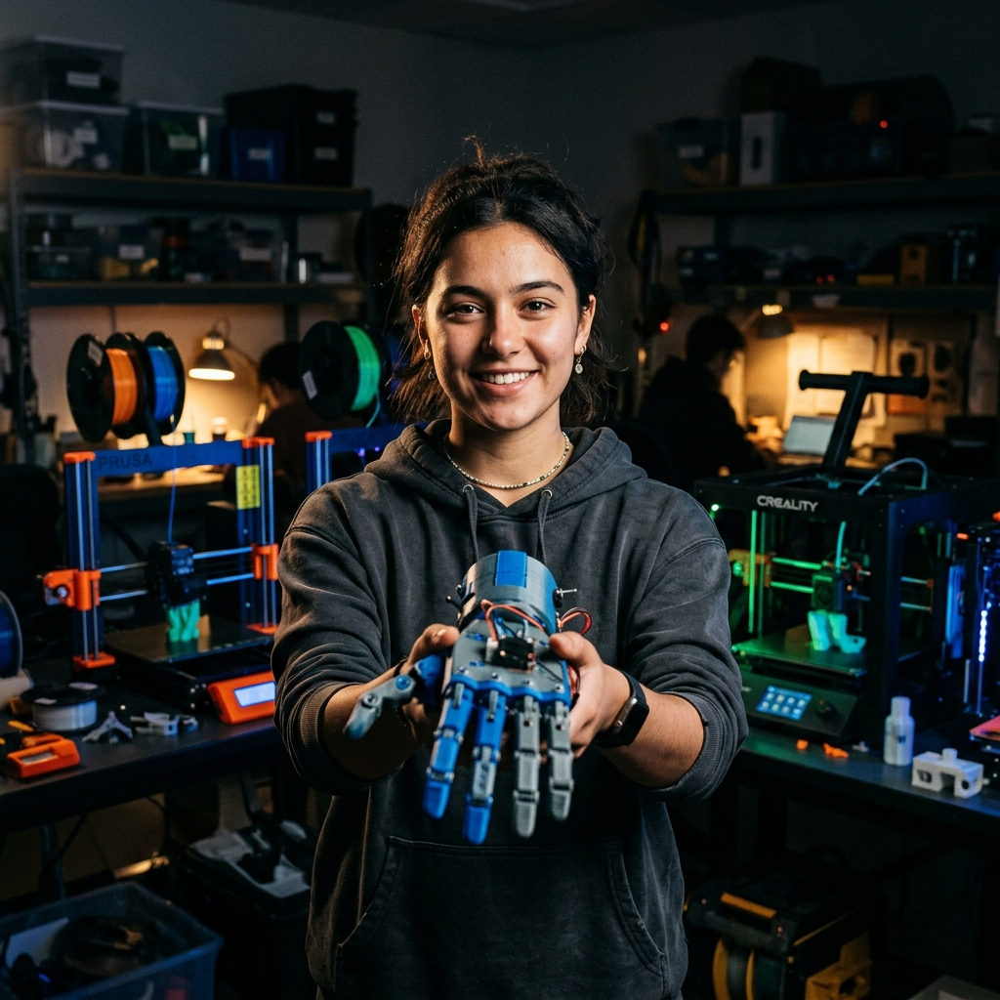
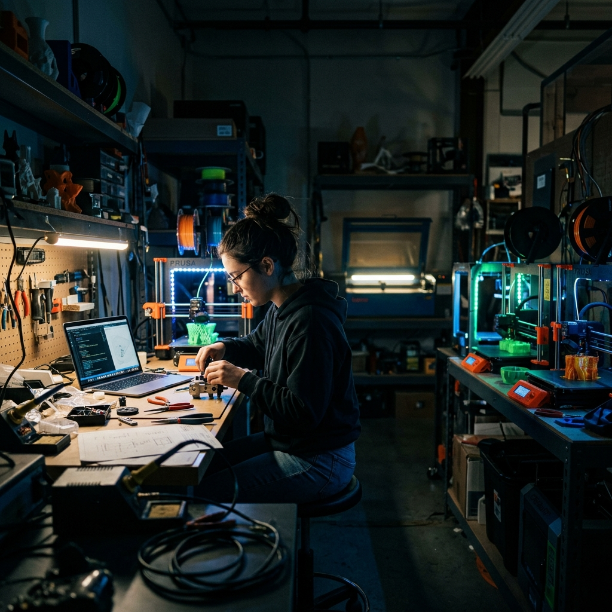
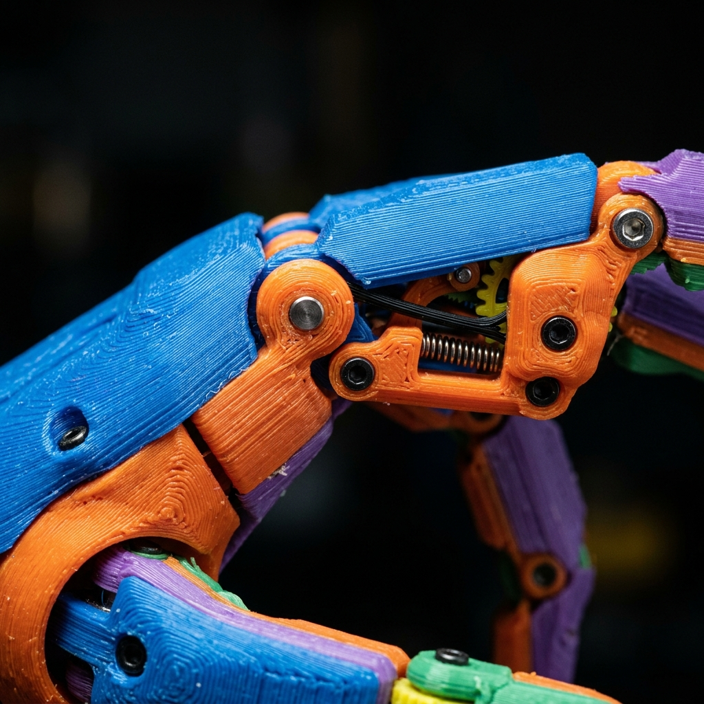

Project Context
The Challenge / Hypothesis
Yariselle Andujar, a Kent State freshman, co-founded a program printing affordable 3D prosthetic limbs for children in Ecuador. While commercial prosthetics cost $5,000–$10,000, 3D printing allows them to be made for $55–$60—a game changer for growing children.
The Solution / Innovation
Using the DI Hub's 3D printing technology, Yariselle is creating accessible medical devices that give kids back their mobility. The photoshoot needs to capture both her humanitarian mission and the cool, tech-forward aesthetic of the maker space where these limbs are born.
Shot Concepts
Concept Category (Posed / Hero)
This is the shot to protect. Yariselle facing the camera, confidently holding a 3D-printed prosthetic hand out toward the viewer. Let this shot come after she's warmed up. The lighting should be clean and cinematic—kill the mixed-temp fluorescent overheads and rely on a strobe plus the practical LED glow from the 3D printers.
- Prop Check: Confirm she has the printed hand, or secure one from the DI Hub beforehand. The shot relies entirely on this visual hook.
- Look straight down the barrel of the lens to establish an immediate connection.
Technical Notes

AI Visualization Prompt — Cinematic Portrait
Concept Category (Environmental)
Start the shoot with this wider shot to establish the environment and let Yariselle loosen up before moving to the high-pressure head-on portrait. Capture her working authentically with the 3D printing equipment in the DI Hub. Keep the overhead lights off so the practical lighting from the machines acts as a feature rather than interference.
- Showcase the scale of the DI Hub and the technology involved.
- Capture her natural interaction with the printing process.
Technical Notes

AI Visualization Prompt — Environmental Wide
Concept Category (Macro / Details)
A close-up focusing purely on the mechanics and layers of the 3D-printed hand. This shot highlights the raw materials and the ingenuity that brings a $10,000 piece of equipment down to a $55 price point. It serves as a strong compositional cutaway for editorial layouts.
- Get in tight on the joints or the layer lines created by the 3D printer.
- A shallow depth of field helps isolate specific structural elements of the hand.
Technical Notes
